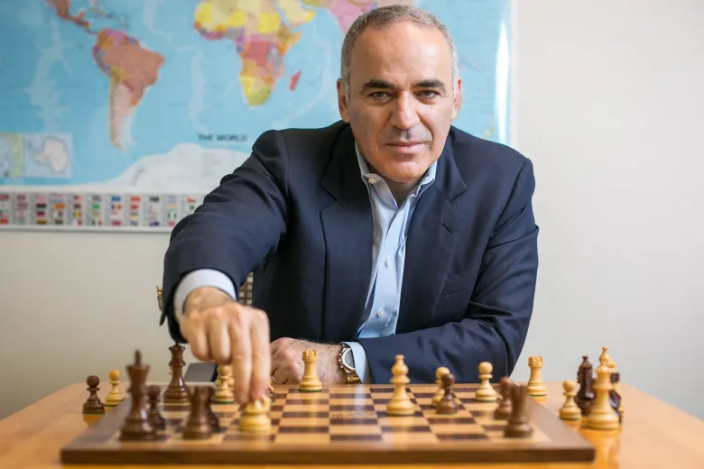

Greatest of All Time (GOATs) in Chess
These three players are widely regarded as the greatest chess players of all time.
Garry Kasparov💀
Dominated Chess for 15 years with unmatched preparation, deep tactics, and aggressive style. Many consider him the greatest in history.
📘 Explore LegacyMagnus Carlsen💀

Modern-day GOAT with universal style, exceptional endgame technique, and remarkable consistency across Classical, Rapid, and Blitz formats & Highest rated player of all time
📘 Explore LegacyRobert James Fischer💀

Revolutionized Chess in the 20th Century, Famous for defeating Spassky in 1972 (Match of the century) and introducing deep preparation and sharp tactics.
📘 Explore Legacy